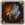
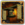
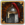
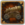
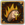
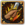
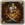

可成立国家（英文：Formable Country）是指那些在游戏一开始不存在（尽管它可能在较晚的历史开局中存在，或开局时具有潜在的核心省份），但是如果满足特定条件时能被成立的国家。可重建国家（reformable country）是指那些开局时已经存在，但是当其不复存在时，可以由其他满足特定条件的国家重新成立的国家，并采用它的旗帜、理念和身份。所有相关的成立决议都可以在各自的国家页面找到（除非另有说明）。
通过成立国家的决议往往需要该国控制一定区域内的（或少数几个十分重要的）核心省份，并且拥有符合要求的主流文化或宗教等。成立一个新国家往往可以带来更强大的国家理念和任务树，以及一定区域内的永久宣称等，在一局游戏中可以增添不小的乐趣。
值得注意的是，绝大多数成立国家的决议都只有在该国独立或是朝贡国的情况下才可以通过；不过也有特例存在，即极少数成立国家的决议的先决条件中，并未限制该国家必须是独立国家或朝贡国——  冰岛、
冰岛、 普鲁士[1]、
普鲁士[1]、 库尔兰和
库尔兰和  耶路撒冷[2]等属于此种特例。
耶路撒冷[2]等属于此种特例。
可成立的国家
这些国家在游戏开局时尚不存在，可以由满足条件的国家通过决议成立。全部这些成立决议都需要游戏使用（正常或）历史设置。
 阿克苏姆
阿克苏姆 阿尔及尔
阿尔及尔 安达卢西亚
安达卢西亚 奥特亚罗瓦
奥特亚罗瓦 阿拉伯
阿拉伯 亚美尼亚
亚美尼亚 巴伐利亚
巴伐利亚 婆罗多
婆罗多 保加利亚
保加利亚 布哈拉
布哈拉 波兰立陶宛联邦[3]
波兰立陶宛联邦[3] 达尔马提亚
达尔马提亚 德干
德干 埃及
埃及 法兰克尼亚
法兰克尼亚 德意志
德意志 金帐
金帐 大不列颠
大不列颠 希腊
希腊 汉诺威
汉诺威 豪萨
豪萨 夏威夷
夏威夷 印度斯坦
印度斯坦 冰岛
冰岛 伊利汗国
伊利汗国 印加
印加 爱尔兰
爱尔兰 以色列
以色列 意大利
意大利 日本
日本 耶路撒冷
耶路撒冷 基塔拉
基塔拉 库尔兰
库尔兰 兰芳
兰芳 利沃尼亚
利沃尼亚 洛塔林吉亚
洛塔林吉亚 马西纳
马西纳 马来亚
马来亚 满洲
满洲 马拉塔
马拉塔 玛雅
玛雅 蒙古帝国
蒙古帝国 莫西
莫西 莫卧儿
莫卧儿 那格浦尔
那格浦尔 尼泊尔
尼泊尔 努比亚
努比亚 尼德兰
尼德兰 波斯
波斯 波美拉尼亚
波美拉尼亚 普鲁士
普鲁士 旁遮普
旁遮普 大清
大清 拉杰普塔纳
拉杰普塔纳 罗马尼亚
罗马尼亚 罗马帝国
罗马帝国 罗兹维帝国
罗兹维帝国 罗姆
罗姆 俄罗斯
俄罗斯 鲁塞尼亚
鲁塞尼亚 撒丁-皮埃蒙特
撒丁-皮埃蒙特 斯堪的纳维亚
斯堪的纳维亚 掸邦
掸邦 暹罗
暹罗 西里西亚
西里西亚 索科托
索科托 索马里
索马里 西班牙
西班牙 施瓦本
施瓦本 吐蕃
吐蕃 的黎波里
的黎波里 托斯卡纳
托斯卡纳 两西西里
两西西里 斐济
斐济 威斯特伐利亚
威斯特伐利亚 大元
大元 津巴布韦
津巴布韦
殖民区域国家
下列国家可由成功独立的原殖民领成立。此类国家和上表中所列出的不同，在随机配置下也可成立。一个国家在一场游戏中只可成立下列国家中之一。
下列国家中，只有  阿拉斯加、
阿拉斯加、 澳大利亚、
澳大利亚、 巴西、
巴西、 加拿大、
加拿大、 卡斯卡迪亚、
卡斯卡迪亚、 墨西哥、
墨西哥、 魁北克、
魁北克、 索诺拉、
索诺拉、 得克萨斯、
得克萨斯、 美利坚、
美利坚、 佛蒙特、
佛蒙特、 西印度群岛和
西印度群岛和  西兰蒂亚有独特的国家理念，其余的国家并无独特理念，所以成立这些国家多数时候是装饰性的。但你依然可以获得成立时的威望和相应的永久宣称。
西兰蒂亚有独特的国家理念，其余的国家并无独特理念，所以成立这些国家多数时候是装饰性的。但你依然可以获得成立时的威望和相应的永久宣称。
首都在殖民区域、属于旧大陆科技组[4]的国家在符合条件时也可以成立这些国家。但旧大陆国家成立殖民区域国家时，需要放弃在旧大陆剩余的所有省份；所有目前拥有的旧大陆省份仍将归属原有tag，而新国家将继承原有tag在殖民区域的所有属国；成立国家后，刷新与所有国家的  外交观点至默认值。
外交观点至默认值。
例如， 博洛尼亚成立
博洛尼亚成立  墨西哥后，博洛尼亚在旧大陆的所有省份仍归博洛尼亚所有，但博洛尼亚的所有殖民区域省份及所有殖民领将被
墨西哥后，博洛尼亚在旧大陆的所有省份仍归博洛尼亚所有，但博洛尼亚的所有殖民区域省份及所有殖民领将被  墨西哥继承；墨西哥成立后，刷新与所有国家的
墨西哥继承；墨西哥成立后，刷新与所有国家的  外交观点修正，例如，与
外交观点修正，例如，与  博洛尼亚应只拥有“相同宗教”的 +25 关系修正。
博洛尼亚应只拥有“相同宗教”的 +25 关系修正。
可重建国家
下列国家在游戏开局时已经存在，但它们本身也是可成立国家；如果它们不复存在，可以由其它满足条件的国家重新通过决议成立：
特殊可成立国家
部分国家不能通过决议成立，只能通过少数特殊手段转换至该tag。部分可成立国家，有除了通过决议成立之外的特殊方式。还有部分国家，没有对应的成立决议，但可以通过特殊的事件由其它国家转换至该国家tag，且与成立国家有相似的效果。另有部分国家，通常不视为可成立国家，可以从当前国家中释放（或在未殖民省份出现），并选择游玩。
以下国家无法通过决议成立，只能使用特定的方式成立：
| 国家 | 成立方式 | 备注 |
|---|---|---|
| 只能在 | ||
| 联盟革新 联盟宪法 | 部落联盟首领可以通过完成联盟革新“联盟宪法”，来继承所有其它成员、立即殖民所有部落领土，而具有以下 | |
| 只能在完成 | ||
| 拥有 | ||
| 只能在 |
以下国家本身可以通过决议成立，但在相关DLC开启时，部分特定国家只能通过除决议以外的方式成立该国家；相关DLC未开启时，对应决议总是可用：
| 国家 | 成立方式 | 相关 DLC |
备注 |
|---|---|---|---|
| DLC | |||
DLC
| |||
DLC
| |||
DLC
| |||
DLC
|
以下国家本身可以通过决议成立，但也可以选择通过决议以外的方式成立：
| 国家 | 成立方式 | 备注 |
|---|---|---|
采用法兰西公国任务的国家可以通过该任务成立
| ||
采用掸邦任务的国家可以通过该任务成立
| ||
|
以下国家本身通常不被视为可成立国家，但其它/另一国家可通过部分特定方式将tag转换至该国家，并与成立国家具有十分相似的效果：
| 国家 | 转换方式 | 适用国家 | 切换任务 | 切换理念 | 备注 |
|---|---|---|---|---|---|
| 该事件仅在完成 | |||||
| 该事件仅在完成 | |||||
| 和硕特 | |||||
| 事件均仅在灾难 内战中触发；视当前所拥有的省份，澜沧可能将tag转变为占巴塞、万象或琅勃拉邦 | |||||
| 该事件仅在完成 | |||||
特殊地，有部分事件允许玩家从当前游玩的国家中释放出另一个国家，并切换至游玩该国家。
| 国家 | 释放方式 | 备注 |
|---|---|---|
| 可以在事件中选择释放祖鲁为独立国家，并游玩该国家 | ||
| 分别可以通过它们各自对应的海盗趣味事件被独立地释放出来，并选择游玩这些国家 | ||
| 可以在事件中选择释放阿尔及尔为独立国家，并游玩该国家；事件仅在完成突尼斯任务“赞助海盗行为”后触发 | ||
| 可以在事件中选择释放哈卜尚为独立国家，并游玩该国家 | ||
| 可以在事件中选择释放东印度公司为独立国家，并游玩该国家 |
部分上述类型的事件仅发生于特定的灾难中：
| 国家 | 备注 | ||
|---|---|---|---|
|  尼德兰起义 | 尼德兰宣布独立！ | 可以在事件中选择游玩，并立即向原国家宣战 | |
|  明王朝的危机 或  没有防备的游牧边疆 |
李自成起义与大顺王朝 | 可以在事件中选择游玩，并立即向 | |
| 云南都护 | |||
| 失去对南方的控制 | |||
|  南北朝 | 南北两朝 及 大越分裂 | 可以在事件中选择游玩二者其一 | |
|  齐米独立 | 齐米阶层挣脱出我们的统治 | 灾难触发后，可在该事件中选择游玩从原国家中释放的自定义国家 | |
| 哥萨克独立 | 哥萨克人挣脱了我们的统治 | 灾难触发后，可在该事件中选择游玩从原国家中释放的自定义国家；该自定义国家具有 | |
|  拉杰普特独立 | 拉杰普特获得独立 | 灾难触发后，可在该事件中选择游玩从原国家中释放的自定义国家 | |
| 马拉塔独立 | 马拉塔获得独立 | 灾难触发后，可在该事件中选择游玩从原国家中释放的自定义国家 | |
|  耶尼切里独立 | 耶尼切里脱离掌控 | 灾难触发后，可在该事件中选择游玩从原国家中释放的自定义国家；该自定义国家具有耶尼切里军政府政府改革 | |
| 古拉姆独立 | 古拉姆独立 | 灾难触发后，可在该事件中选择游玩从原国家中释放的自定义国家 |
特殊地，有部分事件允许玩家将当前游玩的国家切换至一个在未殖民省份出现的新国家：
| 国家 | 事件 | 备注 |
|---|---|---|
| 可发生于灾难 明王朝的危机 或 没有防备的游牧边疆中 事件选项之一允许玩家将所游玩的国家切换为东宁 | ||
| 事件选项之一允许玩家将所游玩的国家切换为富洛 | ||
| 事件选项之一允许玩家将所游玩的国家切换为阿散蒂 | ||
| 事件选项之一允许玩家将所游玩的国家切换为芬吉 |
- 参见：国家名称
一些特定事件、决议、任务等可以使当前国家名称变更为一个装饰性的新名称，但不改变tag。这种情况不视为成立国家。
结局标签
游戏中的一些国家属于结局标签（ End game tags，EGT）国家。这些国家不允许成立其它国家，即便它们已经符合了其它方面的所有条件[6]。这些国家大部分是一定区域内具有较大体量的国家，代表了一种有历史性或民族性的、不易变更的身份认同。历史上也几乎从未有过这类国家改弦更张、接纳一种新身份认同的史实。
不过也有例外，在下列特殊情况下，一个结局标签国家可以成立新的国家，它们分别是：
- 任何国家，包括结局标签国家，都可以作为神圣罗马帝国皇帝通过最后一项帝国改革“重建帝国”，成立
 神圣罗马帝国；
神圣罗马帝国； - 除 神圣罗马帝国及
 教宗国以外的国家，包括（其他）结局标签国家，都可以在符合条件的情况下成立 罗马帝国、 奥特亚罗瓦、 夏威夷或 斐济；
教宗国以外的国家，包括（其他）结局标签国家，都可以在符合条件的情况下成立 罗马帝国、 奥特亚罗瓦、 夏威夷或 斐济； - 结局标签国家 大元可以在符合条件的情况下成立 蒙古帝国。
- 结局标签国家
 埃塞俄比亚可以通过事件或决议来成立 阿克苏姆。
埃塞俄比亚可以通过事件或决议来成立 阿克苏姆。 - 结局标签国家 罗兹维帝国可以通过事件“超越津巴布韦”来成立 津巴布韦，或解锁成立津巴布韦的决议（需要DLC
 起源）。
起源）。
在游戏的开局设置中，可以选择关闭结局标签国家的设置，则所有国家仍然可以不受限制地成立任何国家。但关闭结局标签时，不能获得任何游戏成就。
德意志地区标签
游戏中的一些国家属于德意志地区标签（German regional tags）国家。这些德意志国家不能互相成立[7]。例如， 奥地利即使满足其它所有条件，也不能成立
奥地利即使满足其它所有条件，也不能成立  巴伐利亚；
巴伐利亚； 勃兰登堡即使满足其它所有条件，也不能重建
勃兰登堡即使满足其它所有条件，也不能重建  萨克森。
萨克森。
但是，以上所有国家仍然可以成立  德意志和
德意志和  神圣罗马帝国，以及所有其它可成立国家。成立
神圣罗马帝国，以及所有其它可成立国家。成立  普鲁士也是一个例外；例如，作为
普鲁士也是一个例外；例如，作为  萨克森，在符合条件的情况下，仍然可以继续成立普鲁士。
萨克森，在符合条件的情况下，仍然可以继续成立普鲁士。
不会导致退出神圣罗马帝国的国家
通过绝大多数成立国家的决议，都会导致该国退出  神圣罗马帝国，其拥有的全部帝国省份也将退出帝国，除非该国是帝国皇帝或者选帝侯。但是，成立或重建以下国家总是不会导致退出帝国的后果。其中大多数国家是历史上存在于神圣罗马帝国境内的国家：
神圣罗马帝国，其拥有的全部帝国省份也将退出帝国，除非该国是帝国皇帝或者选帝侯。但是，成立或重建以下国家总是不会导致退出帝国的后果。其中大多数国家是历史上存在于神圣罗马帝国境内的国家：
值得注意的是，尽管部分决议（如成立  耶路撒冷）中未加入“全部省份离开帝国”的效果，但其决议效果中包括将首都迁出欧洲，从而必定导致其自动离开帝国。
耶路撒冷）中未加入“全部省份离开帝国”的效果，但其决议效果中包括将首都迁出欧洲，从而必定导致其自动离开帝国。
成立国家的影响
- 许多可成立国家具有独特的国家理念。决议成立时会触发一个事件——“新的国家传统和野心”，让你选择是否要转化为新理念；当然你也可以维持旧有的理念。请注意，自定义国家无法通过此方法改换理念。
- 许多可成立国家具有独特的任务树，或者在原任务树中增添了仅在成立该国家后才可用的任务。
- 成立新国家会更新与他国的“历史宿敌”态度。比如
 马穆鲁克成立了 阿拉伯，它就不再是
马穆鲁克成立了 阿拉伯，它就不再是  奥斯曼的历史宿敌。这点反过来也适用：如果
奥斯曼的历史宿敌。这点反过来也适用：如果  勃艮第成立了
勃艮第成立了  法兰西，它将成为
法兰西，它将成为  奥地利的历史宿敌。
奥地利的历史宿敌。 - 虽然既存的外交关系（联盟、宿敌等）不会变化，但非宿敌的国家对你的态度会暂时变成
 未知，持续至游戏中下个月到来时。如果你的一个盟友宿敌上限不满，这可能会导致原来的盟友在你成立新国家后将你设为宿敌；而原先对你态度为“友好”等的国家可能不会再愿意与你结盟等。
未知，持续至游戏中下个月到来时。如果你的一个盟友宿敌上限不满，这可能会导致原来的盟友在你成立新国家后将你设为宿敌；而原先对你态度为“友好”等的国家可能不会再愿意与你结盟等。 - 成立国家和重建国家能作为大幅减少造核花费的策略。成立决议提供的永久宣称会给予大量的奖励，诸如对大片地区的 -25%
 造核花费和宣战理由。此外，重新成立一个已不存在的可重建国家后，将获得这个国家以前的核心，如果这些核心中有一些尚未被你拥有，那么可以用较低的AE收回核心领土，并且不用花费点数造核。
造核花费和宣战理由。此外，重新成立一个已不存在的可重建国家后，将获得这个国家以前的核心，如果这些核心中有一些尚未被你拥有，那么可以用较低的AE收回核心领土，并且不用花费点数造核。 - 在
 神圣罗马帝国内，通过大多数成立国家的决议会导致这个国家退出帝国，除非这个国家是皇帝或者选帝侯。退出帝国会导致该国的所有省份离开帝国，造成帝国权威的下降，并与当前的帝国皇帝获得一个严重的关系惩罚修正。这在成立 尼德兰、 普鲁士时可能比较常见，如果不是皇帝、选帝侯，就要思考是否为了成立新国家而彻底放弃帝国。但是，成立 巴伐利亚、 施瓦本等国家是不会造成退出帝国的后果的。
神圣罗马帝国内，通过大多数成立国家的决议会导致这个国家退出帝国，除非这个国家是皇帝或者选帝侯。退出帝国会导致该国的所有省份离开帝国，造成帝国权威的下降，并与当前的帝国皇帝获得一个严重的关系惩罚修正。这在成立 尼德兰、 普鲁士时可能比较常见，如果不是皇帝、选帝侯，就要思考是否为了成立新国家而彻底放弃帝国。但是，成立 巴伐利亚、 施瓦本等国家是不会造成退出帝国的后果的。 - 自1.33版本起，作为
 作为中国皇帝成立其他国家不再会重置天命值和取消所有天朝改革。
作为中国皇帝成立其他国家不再会重置天命值和取消所有天朝改革。
参考资料
- ↑
 条顿骑士团与
条顿骑士团与  勃兰登堡成立普鲁士的决议的先决条件中，未限制该国须为独立国家或朝贡国。其余国家成立普鲁士的决议则仍有此条件限制。
勃兰登堡成立普鲁士的决议的先决条件中，未限制该国须为独立国家或朝贡国。其余国家成立普鲁士的决议则仍有此条件限制。
- ↑ 尽管如此，但AI通过决议“重建耶路撒冷王国”（
kingdom_of_jerusalem）的几率为0。 - ↑ 由
 立陶宛（或主流文化为立陶宛的
立陶宛（或主流文化为立陶宛的  波兰）成立时，国家名称将重设为自定义国名“立陶宛波兰联邦”。
波兰）成立时，国家名称将重设为自定义国名“立陶宛波兰联邦”。
- ↑ 科技组不是
 北美洲、
北美洲、 中美洲、
中美洲、 安第斯、
安第斯、 南美洲或
南美洲或  高等美洲。
高等美洲。
- ↑ 通过决议“宣布汉萨同盟新生”（
declare_hanseatic_league）可以重建（成立） 吕贝克，且国家名称将重设为自定义国名“汉萨同盟”。
吕贝克，且国家名称将重设为自定义国名“汉萨同盟”。
- ↑ 成立国家的决议中，用
was_never_end_game_tag_trigger = yes明确地阻止这些标签成立新国家。 - ↑ 相关的成立国家的决议中，用
was_never_german_regional_tag_trigger = yes明确地阻止这些标签成立这类新国家。